import numpy as np
import pandas as pd
import scipy.stats as stats
import matplotlib.pyplot as plt
import seaborn as sns
from sklearn.model_selection import train_test_split
from sklearn.metrics import accuracy_score
from sklearn.model_selection import cross_val_score
from sklearn.linear_model import LogisticRegression
from sklearn.tree import DecisionTreeClassifier
from sklearn.preprocessing import FunctionTransformer
from sklearn.compose import ColumnTransformerdf = pd.read_csv('titanic.csv',usecols=['Age','Fare','Survived'])df['Age'].fillna(df['Age'].mean(),inplace=True)df.head()| Survived | Age | Fare | |
|---|---|---|---|
| 0 | 0 | 22.0 | 7.2500 |
| 1 | 1 | 38.0 | 71.2833 |
| 2 | 1 | 26.0 | 7.9250 |
| 3 | 1 | 35.0 | 53.1000 |
| 4 | 0 | 35.0 | 8.0500 |
X = df.iloc[:,1:3]
y = df.iloc[:,0]X_train,X_test,y_train,y_test = train_test_split(X,y,test_size=0.2,random_state=42)plt.figure(figsize=(14,4))
plt.subplot(121)
sns.histplot(X_train['Age'],kde='True')
plt.title('Age')
plt.subplot(122)
stats.probplot(X_train['Age'],dist='norm',plot=plt)
plt.title('Age QQ Plot')
plt.show()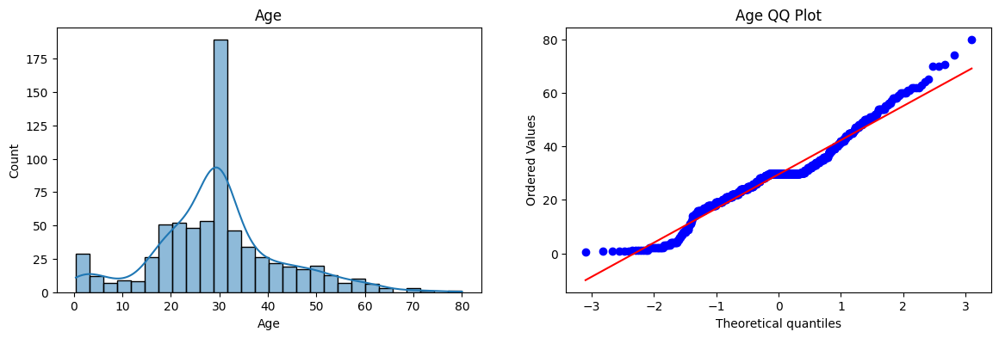
plt.figure(figsize=(14,4))
plt.subplot(121)
sns.histplot(X_train['Fare'],kde='True')
plt.title('Age')
plt.subplot(122)
stats.probplot(X_train['Fare'],dist='norm',plot=plt)
plt.title('Age QQ Plot')
plt.show()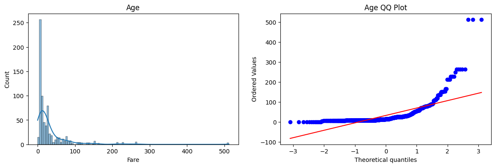
clf = LogisticRegression()
clf2 = DecisionTreeClassifier()clf.fit(X_train,y_train)
clf2.fit(X_train,y_train)
y_pred = clf.predict(X_test)
y_pred1 = clf2.predict(X_test)
print("Accuracy LR", accuracy_score(y_test,y_pred))
print("Accuracy DT", accuracy_score(y_test,y_pred1))Accuracy LR 0.6480446927374302
Accuracy DT 0.6759776536312849trf = FunctionTransformer(func=np.log1p)X_train_transformed = trf.fit_transform(X_train)
X_test_tranformed = trf.transform(X_test)clf = LogisticRegression()
clf2 = DecisionTreeClassifier()
clf.fit(X_train_transformed,y_train)
clf2.fit(X_train_transformed,y_train)
y_pred = clf.predict(X_test_tranformed)
y_pred1 = clf2.predict(X_test_tranformed)
print("Accuracy LR", accuracy_score(y_test,y_pred))
print("Accuracy DT", accuracy_score(y_test,y_pred1))Accuracy LR 0.6815642458100558
Accuracy DT 0.6759776536312849X_transformed = trf.fit_transform(X)
clf = LogisticRegression()
clf2 = DecisionTreeClassifier()
print("LR",np.mean(cross_val_score(clf,X_transformed,y,scoring='accuracy',cv=10)))
print("DT",np.mean(cross_val_score(clf2,X_transformed,y,scoring='accuracy',cv=10)))
LR 0.678027465667915
DT 0.6633208489388265plt.figure(figsize=(14,4))
plt.subplot(121)
stats.probplot(X_train['Age'],dist="norm",plot=plt)
plt.title('Age Before Log')
plt.subplot(122)
stats.probplot(X_transformed['Age'],dist='norm',plot=plt)
plt.title('Age After log')
plt.show()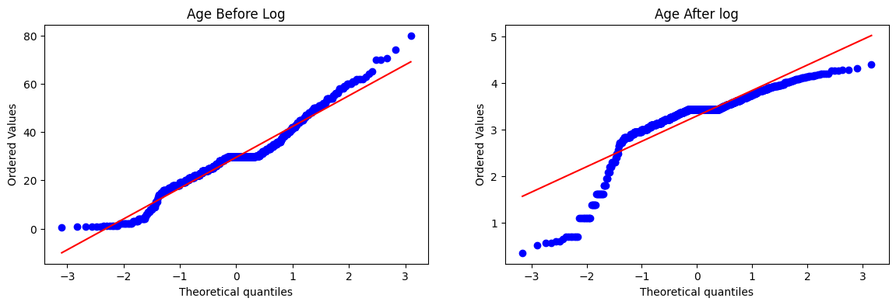
trf2 = ColumnTransformer([('log',FunctionTransformer(np.log1p),['Fare'])],remainder='passthrough')
X_train_transformed2 = trf2.fit_transform(X_train)
X_test_transformed2 = trf2.transform(X_test)clf = LogisticRegression()
clf2 = DecisionTreeClassifier()
clf.fit(X_train_transformed2,y_train)
clf2.fit(X_train_transformed2,y_train)
y_pred = clf.predict(X_test_transformed2)
y_pred1 = clf2.predict(X_test_transformed2)
print("Accuracy LR", accuracy_score(y_test,y_pred))
print("Accuracy DT", accuracy_score(y_test,y_pred1))Accuracy LR 0.6703910614525139
Accuracy DT 0.6703910614525139def apply_transform(transform):
X = df.iloc[:,1:3]
y = df.iloc[:,0]
trf = ColumnTransformer([('log',FunctionTransformer(transform),['Fare'])],remainder='passthrough')
X_transformed = trf.fit_transform(X)
clf = LogisticRegression()
print('Accuracy',np.mean(cross_val_score(clf,X_transformed,y,scoring='accuracy',cv=10)))
plt.figure(figsize=(14,4))
plt.subplot(121)
stats.probplot(df['Fare'],dist='norm',plot=plt)
plt.title('Fare Before Transform')
plt.subplot(122)
stats.probplot(X_transformed[:,0],dist='norm',plot=plt)
plt.title('Fare After Transform')
plt.show()apply_transform(lambda x:x) #nothingAccuracy 0.6589013732833957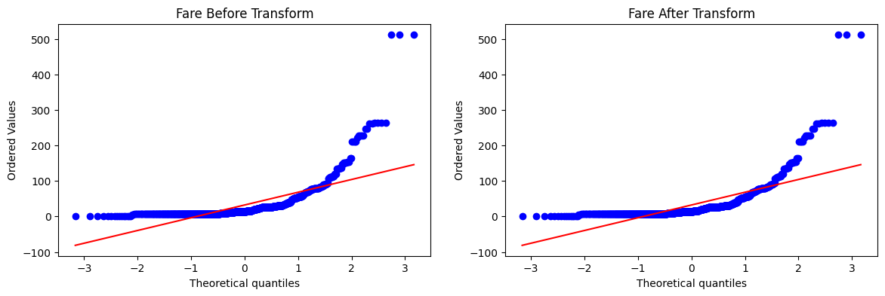
apply_transform(lambda x:x**2) #left skew (Square transform)Accuracy 0.6431335830212235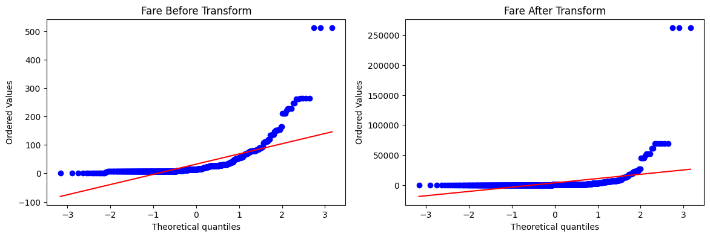
apply_transform(lambda x:x**1/2) # (Square Root)Accuracy 0.6589013732833957apply_transform(lambda x:1/(x+0.00001)) # (Reciprocal Transform)Accuracy 0.61729088639201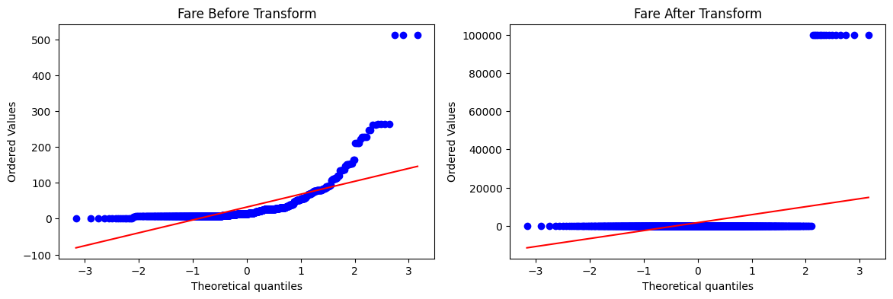
apply_transform(np.sin) # (Custom Transform)Accuracy 0.6195131086142323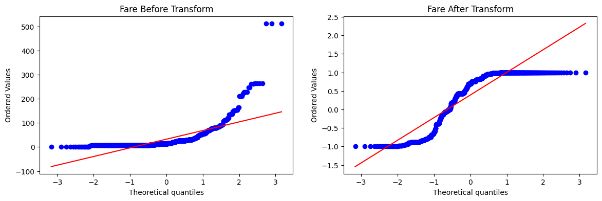
Power Transform
df = pd.read_csv("concrete_data.csv")df.head()| Cement | Blast Furnace Slag | Fly Ash | Water | Superplasticizer | Coarse Aggregate | Fine Aggregate | Age | Strength | |
|---|---|---|---|---|---|---|---|---|---|
| 0 | 540.0 | 0.0 | 0.0 | 162.0 | 2.5 | 1040.0 | 676.0 | 28 | 79.99 |
| 1 | 540.0 | 0.0 | 0.0 | 162.0 | 2.5 | 1055.0 | 676.0 | 28 | 61.89 |
| 2 | 332.5 | 142.5 | 0.0 | 228.0 | 0.0 | 932.0 | 594.0 | 270 | 40.27 |
| 3 | 332.5 | 142.5 | 0.0 | 228.0 | 0.0 | 932.0 | 594.0 | 365 | 41.05 |
| 4 | 198.6 | 132.4 | 0.0 | 192.0 | 0.0 | 978.4 | 825.5 | 360 | 44.30 |
df.shape(1030, 9)df.isnull().sum()Cement 0
Blast Furnace Slag 0
Fly Ash 0
Water 0
Superplasticizer 0
Coarse Aggregate 0
Fine Aggregate 0
Age 0
Strength 0
dtype: int64df.describe()| Cement | Blast Furnace Slag | Fly Ash | Water | Superplasticizer | Coarse Aggregate | Fine Aggregate | Age | Strength | |
|---|---|---|---|---|---|---|---|---|---|
| count | 1030.000000 | 1030.000000 | 1030.000000 | 1030.000000 | 1030.000000 | 1030.000000 | 1030.000000 | 1030.000000 | 1030.000000 |
| mean | 281.167864 | 73.895825 | 54.188350 | 181.567282 | 6.204660 | 972.918932 | 773.580485 | 45.662136 | 35.817961 |
| std | 104.506364 | 86.279342 | 63.997004 | 21.354219 | 5.973841 | 77.753954 | 80.175980 | 63.169912 | 16.705742 |
| min | 102.000000 | 0.000000 | 0.000000 | 121.800000 | 0.000000 | 801.000000 | 594.000000 | 1.000000 | 2.330000 |
| 25% | 192.375000 | 0.000000 | 0.000000 | 164.900000 | 0.000000 | 932.000000 | 730.950000 | 7.000000 | 23.710000 |
| 50% | 272.900000 | 22.000000 | 0.000000 | 185.000000 | 6.400000 | 968.000000 | 779.500000 | 28.000000 | 34.445000 |
| 75% | 350.000000 | 142.950000 | 118.300000 | 192.000000 | 10.200000 | 1029.400000 | 824.000000 | 56.000000 | 46.135000 |
| max | 540.000000 | 359.400000 | 200.100000 | 247.000000 | 32.200000 | 1145.000000 | 992.600000 | 365.000000 | 82.600000 |
X = df.drop(columns=['Strength'])
y = df.iloc[:,-1]X_train,X_test,y_train,y_test = train_test_split(X,y,test_size=0.2,random_state=42)from sklearn.linear_model import LinearRegression
from sklearn.metrics import r2_score
lr = LinearRegression()
lr.fit(X_train,y_train)
y_pred = lr.predict(X_test)
r2_score(y_test,y_pred)0.6275531792314848lr = LinearRegression()
np.mean(cross_val_score(lr,X,y,scoring='r2'))0.4609940491662864for col in X_train.columns:
plt.figure(figsize=(14,4))
plt.subplot(121)
sns.histplot(X_train[col],kde=True,element='step')
plt.subplot(122)
stats.probplot(X_train[col],dist="norm",plot=plt)
plt.title(col)
plt.show()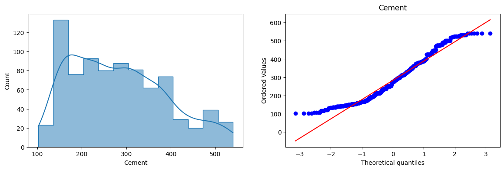
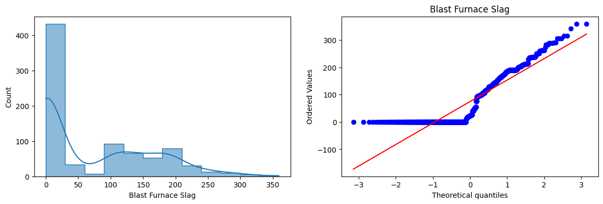
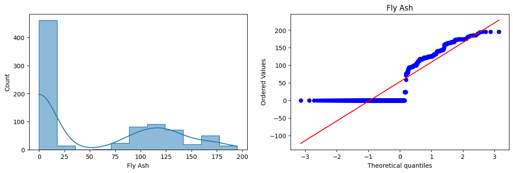
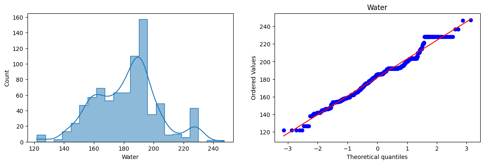
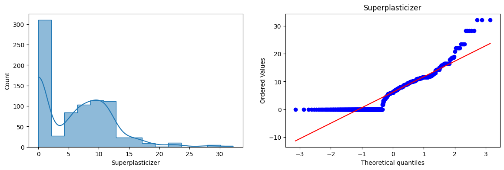
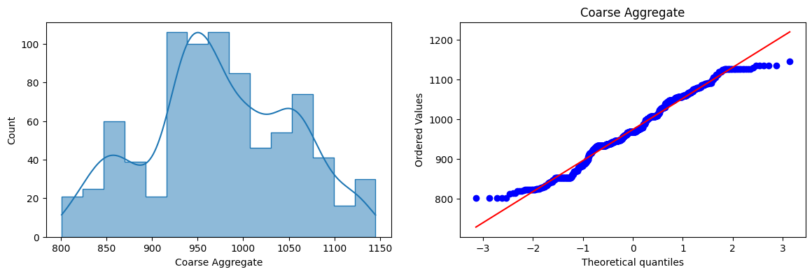
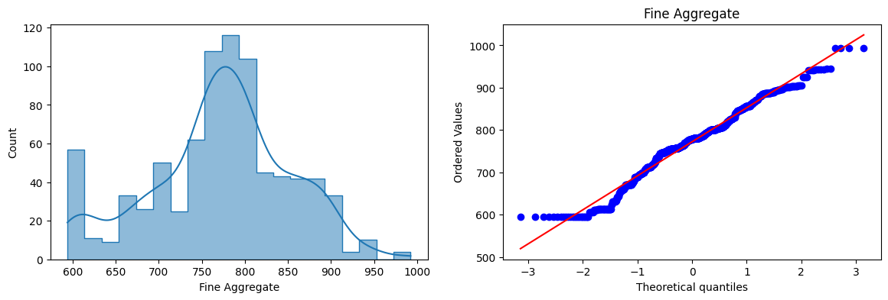
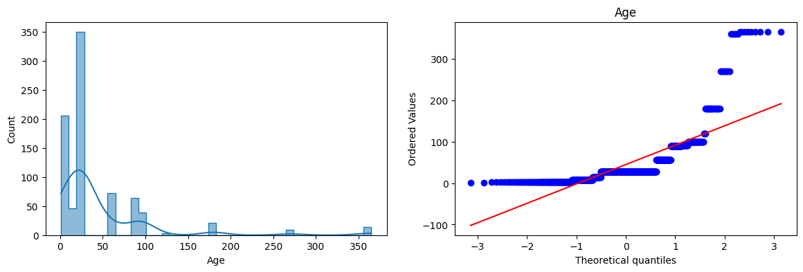
from sklearn.preprocessing import PowerTransformer# Applying Box-Cox Transform
pt = PowerTransformer(method='box-cox')
X_train_transformed = pt.fit_transform(X_train+0.000001)
X_test_transformed = pt.transform(X_test+0.000001)
pd.DataFrame({'cols':X_train.columns,'box_cox_lambdas':pt.lambdas_})| cols | box_cox_lambdas | |
|---|---|---|
| 0 | Cement | 0.177025 |
| 1 | Blast Furnace Slag | 0.025093 |
| 2 | Fly Ash | -0.038970 |
| 3 | Water | 0.772682 |
| 4 | Superplasticizer | 0.098811 |
| 5 | Coarse Aggregate | 1.129813 |
| 6 | Fine Aggregate | 1.782019 |
| 7 | Age | 0.066631 |
lr = LinearRegression()
lr.fit(X_train_transformed,y_train)
y_pred2 = lr.predict(X_test_transformed)
r2_score(y_test,y_pred2)0.8047825007854219X_train_transformed = pd.DataFrame(X_train_transformed,columns=X_train.columns)
for col in X_train_transformed.columns:
plt.figure(figsize=(14,4))
plt.subplot(121)
sns.histplot(X_train[col],kde=True,element='step')
plt.title(col)
plt.subplot(122)
sns.histplot(X_train_transformed[col],kde=True,element='step')
plt.title(col)
plt.show()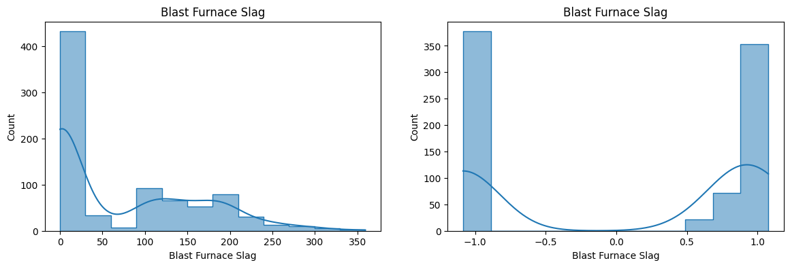
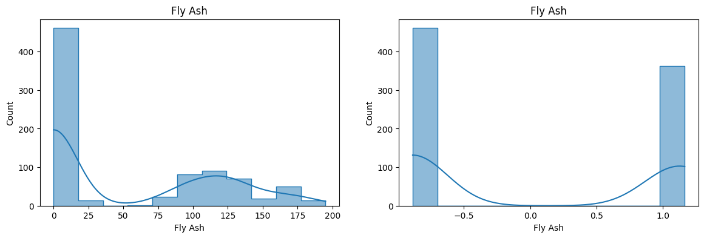
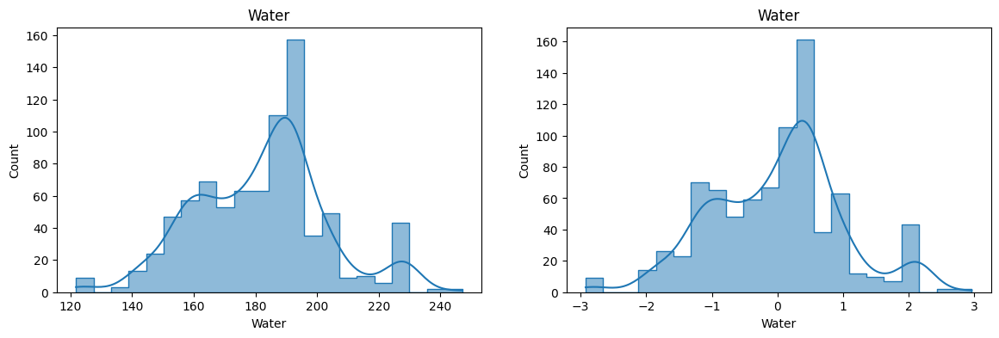
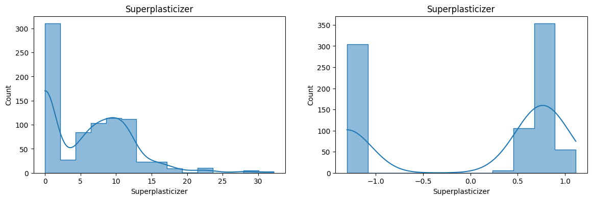
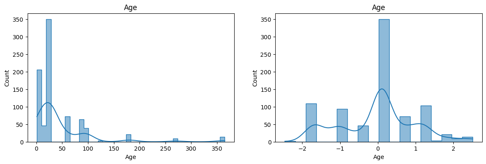
# Applying Yeo-Johnson Transform
pt1 = PowerTransformer()
X_train_transformed2 = pt1.fit_transform(X_train+0.000001)
X_test_transformed2 = pt1.transform(X_test+0.000001)
lr = LinearRegression()
lr.fit(X_train_transformed2,y_train)
y_pred3 = lr.predict(X_test_transformed2)
print(r2_score(y_test,y_pred3))
pd.DataFrame({'cols':X_train.columns,'box_cox_lambdas':pt1.lambdas_})0.8161906545593434| cols | box_cox_lambdas | |
|---|---|---|
| 0 | Cement | 0.174348 |
| 1 | Blast Furnace Slag | 0.015715 |
| 2 | Fly Ash | -0.161447 |
| 3 | Water | 0.771307 |
| 4 | Superplasticizer | 0.253935 |
| 5 | Coarse Aggregate | 1.130050 |
| 6 | Fine Aggregate | 1.783100 |
| 7 | Age | 0.019885 |
X_train_transformed2 = pd.DataFrame(X_train_transformed2,columns=X_train.columns)
for col in X_train_transformed2.columns:
plt.figure(figsize=(14,4))
plt.subplot(121)
sns.histplot(X_train[col],kde=True,element='step')
plt.title(col)
plt.subplot(122)
sns.histplot(X_train_transformed2[col],kde=True,element='step')
plt.title(col)
plt.show()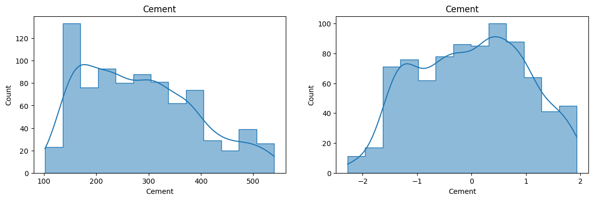
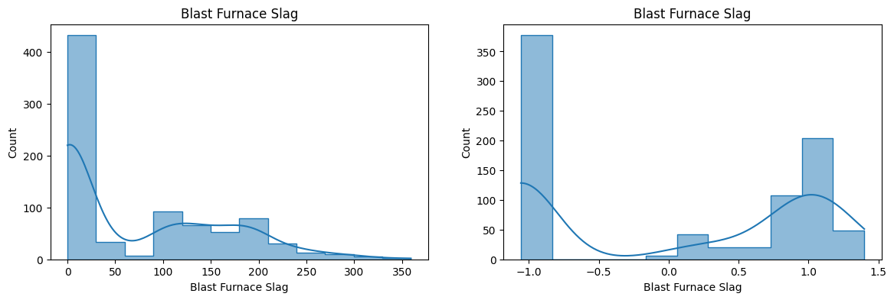
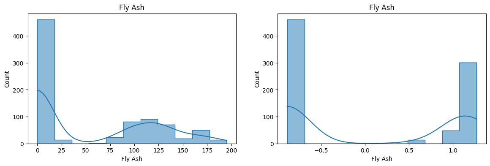
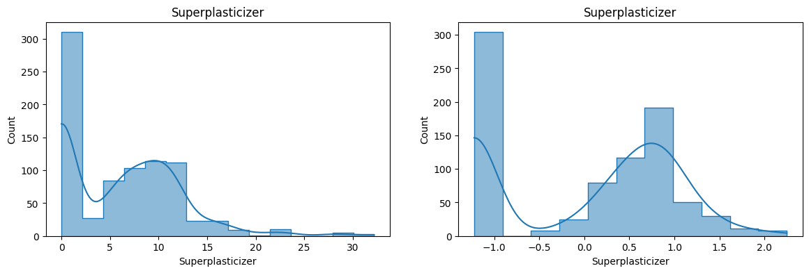
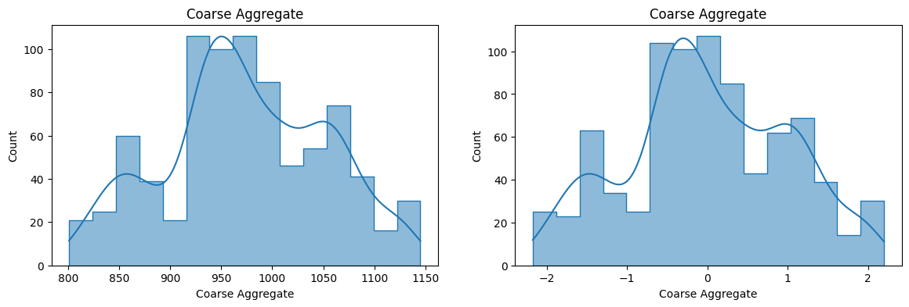
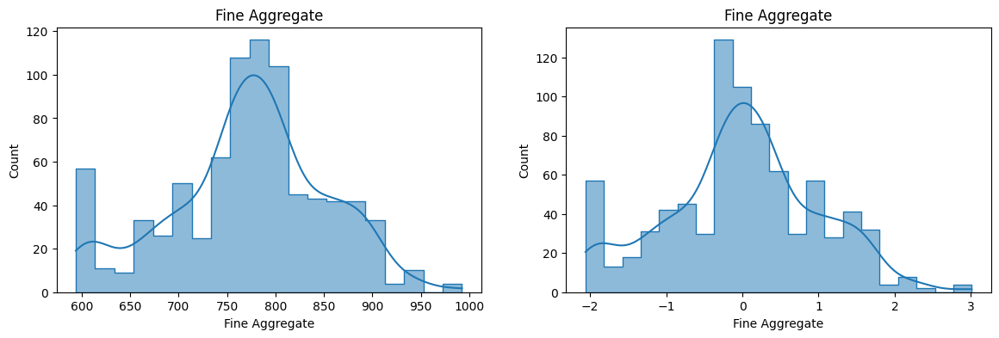
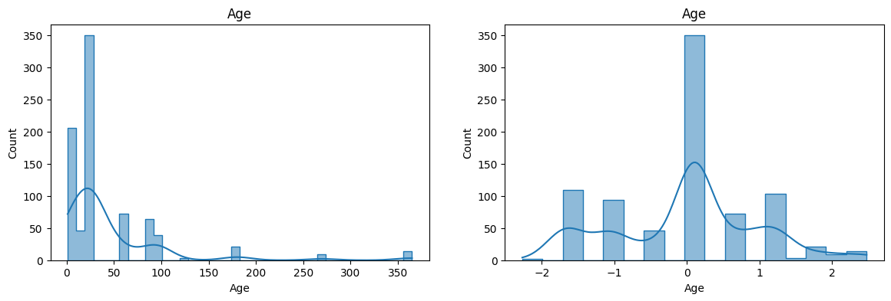
pd.DataFrame({'cols':X_train.columns,'box_cox_lambdas':pt.lambdas_,'Yeo_Johnson_lambdas':pt1.lambdas_})| cols | box_cox_lambdas | Yeo_Johnson_lambdas | |
|---|---|---|---|
| 0 | Cement | 0.177025 | 0.174348 |
| 1 | Blast Furnace Slag | 0.025093 | 0.015715 |
| 2 | Fly Ash | -0.038970 | -0.161447 |
| 3 | Water | 0.772682 | 0.771307 |
| 4 | Superplasticizer | 0.098811 | 0.253935 |
| 5 | Coarse Aggregate | 1.129813 | 1.130050 |
| 6 | Fine Aggregate | 1.782019 | 1.783100 |
| 7 | Age | 0.066631 | 0.019885 |